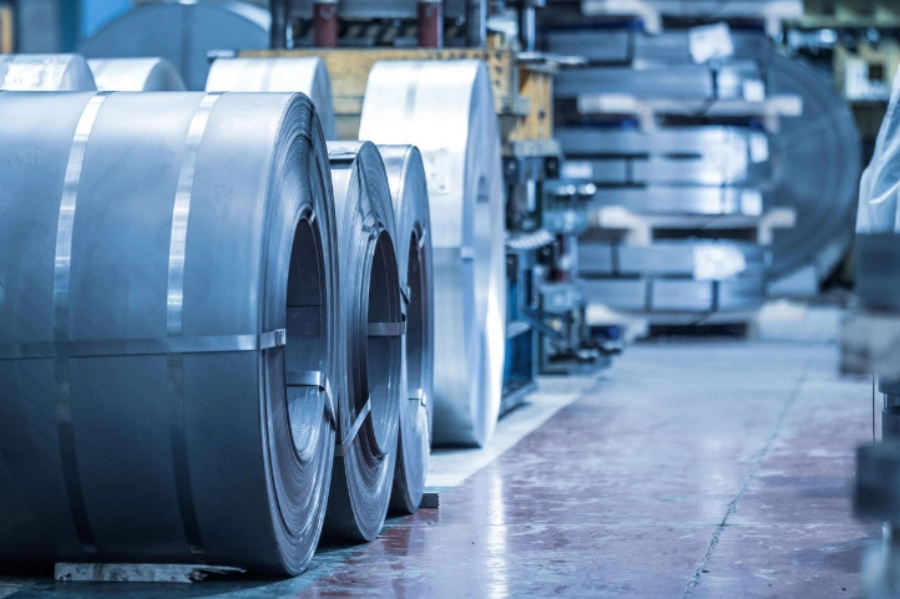

Ari Global Industries supplies a broad range of structural steel products, reinforcement materials, plates, sheets, pipes, tubes, and industrial steel solutions through a trusted sourcing network built around quality, consistency, and project execution.
Ari Global Industries provides sourcing and supply solutions for structural steel, reinforcement materials, fabricated products, industrial-grade steel components, and project-specific requirements.
Through a strong manufacturing and supplier network, we help clients access steel products aligned with technical specifications, quality requirements, project schedules, and international sourcing needs.
Whether the requirement involves construction, industrial fabrication, manufacturing, infrastructure development, or specialized applications, our objective is to provide dependable supply solutions backed by coordination, consistency, and execution support.
TMT bars are widely used in reinforced concrete structures, industrial developments, infrastructure projects, commercial construction, and heavy-duty applications requiring strength, durability, and structural reliability.
Ari Global Industries supports the sourcing and supply of TMT bars across multiple project requirements, helping clients access suitable reinforcement solutions based on engineering specifications and operational needs.
Round bars are widely utilized across manufacturing, fabrication, machining, engineering, and industrial processing applications where strength, dimensional consistency, and versatility are critical.
Through our sourcing network, Ari Global Industries supports requirements ranging from standard commercial applications to specialized industrial and engineering projects requiring specific material characteristics and compliance standards.
Square bars are commonly used in fabrication, machinery, architectural metalwork, support structures, and industrial manufacturing environments requiring dependable structural performance.
Ari Global Industries supplies square bar solutions suitable for a broad range of commercial, industrial, and infrastructure applications through reliable sourcing and coordinated delivery.
Flat bars serve a wide variety of structural, fabrication, manufacturing, and infrastructure applications where flexibility and reliable performance are required.
Used extensively across construction, machinery support systems, industrial frameworks, and engineering projects, flat bars remain among the most versatile steel products available.
Steel angles are fundamental structural elements used across buildings, industrial facilities, infrastructure developments, support systems, and fabricated steel structures.
Ari Global Industries supplies both equal and unequal angle sections suitable for diverse engineering, construction, and industrial applications.
Steel channels are widely utilized in structural frameworks, industrial facilities, equipment supports, fabrication projects, and infrastructure developments where strength and load distribution are important design considerations.
Ari Global Industries supports sourcing and supply requirements for channel sections across a wide range of industrial and commercial applications through a dependable supplier network.
Steel beams are essential load-bearing components used in commercial buildings, industrial facilities, warehouses, infrastructure projects, manufacturing plants, and large-scale structural developments.
Through our sourcing network, Ari Global Industries supplies structural beam solutions suitable for projects requiring strength, stability, and long-term performance.
Steel plates are used extensively across construction, manufacturing, industrial fabrication, heavy engineering, machinery production, and infrastructure development.
Ari Global Industries supports sourcing requirements ranging from standard structural plates to specialized project-specific plate solutions for demanding industrial applications.
Steel sheets are utilized across manufacturing, fabrication, construction, automotive, industrial equipment, and engineering applications requiring dimensional precision and versatility.
Our sourcing capabilities support a broad range of sheet products tailored to specific production, fabrication, and operational requirements.
Pipes and tubes play a critical role across industrial operations, infrastructure projects, construction developments, manufacturing facilities, utilities, and engineering systems.
Ari Global Industries supports sourcing requirements for a broad range of pipe and tube products, ensuring reliable solutions aligned with technical specifications and operational requirements.
| Supply Capability | Availability |
|---|---|
| Grades | Available As Required |
| Standards | Available As Required |
| Dimensions | Custom Specifications Supported |
| Lengths | Project-Specific Supply |
| Finishes | Multiple Options Available |
| Bulk Quantities | Supported |
| Project Orders | Supported |
| Container Loads | Supported |
| International Export | Supported |
| Documentation Support | Available |
Access to trusted manufacturing partners and suppliers supporting diverse steel requirements across multiple industries.
Ability to support varying grades, standards, specifications, and project requirements through a structured sourcing approach.
Coordinated support for export documentation, supplier alignment, logistics planning, and project execution requirements.
Focused on dependable project outcomes through sourcing, coordination, quality oversight, and delivery support.
Whether your project requires reinforcement materials, structural steel sections, plates, sheets, pipes, tubes, or customized steel sourcing solutions, Ari Global Industries is prepared to support your requirements through reliable sourcing and coordinated execution.
Contact Our Team